How to Align Your Flow
with
Optimal Control
Reinforcement learning has helped make language models such as ChatGPT and DeepSeek-R1 better at following instructions and solving reasoning problems. How should we use reward feedback to improve image and video generators?
Many of these generators, including Stable Diffusion 3, FLUX, and MiniMax H3, are built on flow matching. They learn to transform noise into a sample by following a continuous trajectory. We would like to improve their outputs through reward feedback while preserving the capabilities learned during pretraining.
There are two ways to do this. Guidance changes the sampling process at test time and leaves the model untouched. Fine-tuning changes the model's weights in an additional training phase. Both face the same design question, which is how to measure departure from the pretrained generator.
The standard answer leads to an odd situation. A flow generates samples by following a deterministic trajectory, yet the common methods for aligning it introduce stochastic dynamics to make a KL-regularized objective tractable.
Is KL really the right objective for aligning flows?
In two recent papers, Flow Map Reward Guidance (FMRG) for guidance and Wasserstein-Tilted Flow Maps (WTF) for fine-tuning, we measure departure through the motion of the flow itself. This gives a transport-based regularizer that turns reward alignment into a deterministic optimal control problem. The resulting distribution is a Wasserstein tilt of the pretrained generator.
Flow maps make this formulation particularly useful. By predicting future states along a trajectory, they provide the information needed to guide and fine-tune the generator efficiently. This gives us a reason to care about flow maps beyond their ability to accelerate inference.
Contents
Why is aligning a flow so awkward? A different notion of closeness Why flow maps? Guidance by looking ahead Fine-tuning by learning the control Looking ForwardWhy is aligning a flow so awkward?
Let $r$ be a reward function that scores generated samples, such as a learned model of human preference. Reward alignment has predominantly been formulated as KL-regularized reward maximization,
where $\rho_1$ is the distribution of the pretrained model and $\lambda$ sets the strength of the reward. Its solution is the reward-tilted distribution $\tilde\rho_1$, which reweights the base distribution so that samples with high reward become more likely.
For an autoregressive language model this objective is convenient. The log-probability of a sequence is a sum of token log-probabilities, so the KL to the reference model can be estimated from samples, and sampling already consists of stochastic token decisions, which is what policy-gradient methods need. For a flow, both guidance and fine-tuning become harder.
Guidance toward the tilt needs, at each partially generated sample, the expected exponentiated reward of its possible continuations. That expectation comes from rollouts of an auxiliary stochastic process, and because the reward enters through an exponential, a few rare high-reward continuations can dominate the estimate. Multi-particle methods such as sequential Monte Carlo can target the tilt, but they need many particles and many integration steps.
The exact tilt correction
Sampling the tilt exactly adds to the velocity a correction proportional to $\nabla_x \log \mathbb{E}[e^{\lambda r(X_1)} \mid X_t = x]$, where $X$ follows an auxiliary memoryless stochastic process whose marginals at every time match those of the pretrained model, and the proportionality coefficient depends on the noise level of that process. The expectation runs over all stochastic continuations of the current state, which is why it has to be estimated by simulation. Exact sampling of the tilt can also be computationally intractable, even for simple quadratic rewards (Moitra et al., 2026).
Fine-tuning runs into a different problem. The likelihood of a flow requires integrating the divergence of its velocity along each trajectory, which makes the KL between pretrained and fine-tuned outputs expensive to evaluate. The tractable alternative in widely used formulations is a KL between path distributions, but changing a deterministic trajectory makes the old and new path laws singular, so that path-space KL is infinite. Methods such as Adjoint Matching and Flow-GRPO therefore introduce stochastic dynamics. They convert the flow into a diffusion with the same marginals, fine-tune the diffusion, and convert the result back into a flow.
If the generator moves samples along a deterministic flow, we can instead measure departure from the pretrained model through that motion.
A different notion of closeness
A flow generates by moving samples. Each noise sample $x_0 \sim \rho_0$ follows the pretrained velocity $\dot x_t = b_t(x_t)$ until it becomes a sample $x_1$. Suppose we modify the pretrained velocity by adding a control $u_t$. Following the pretrained flow requires no control. Departing from it costs the squared size of the intervention, accumulated along the trajectory. We then maximize the terminal reward while paying for this effort.
This is a deterministic optimal control problem, and its solution is again a single deterministic flow with velocity $b_t + u_t^*$. No auxiliary diffusion appears anywhere. It is the same control problem that FMRG proposed for guidance, where it is approximated one trajectory at a time.
WTF shows what this objective means at the level of distributions. First, consider the least control effort needed to steer the pretrained dynamics from an initial point $x$ to an endpoint $y$. This defines a transport cost $c_b(x, y)$. We can then ask for the least total effort needed to transport the noise distribution $\rho_0$ to a terminal distribution $\nu$. The resulting optimal transport cost, $\mathcal{T}_b(\rho_0, \nu)$, becomes our regularizer.
Replacing the KL penalty with $\mathcal{T}_b$ gives an objective with the same optimal value as the deterministic control problem above. Its optimum is the Wasserstein tilt of the pretrained model.
Although $\mathcal{T}_b$ is written with the noise distribution $\rho_0$, it measures departure from the pretrained generator, because its cost contains $b$ and following $b$ costs nothing. The only distribution reachable at zero cost is the pretrained one.
With $b\equiv 0$, the regularizer reduces to $\tfrac12 W_2^2(\rho_0,\nu)$. With a nontrivial $b$ it measures the effort required beyond what the pretrained model already does.
Here $\omega$ is a path connecting $x$ to $y$, and $\Pi(\rho_0,\nu)$ is the set of couplings between the initial and terminal distributions.
KL regularization
$$\max_{\nu}\ \lambda\,\mathbb{E}_{\nu}[r]-\mathrm{KL}(\nu\,\|\,\rho_1)$$Measures departure through the density ratio to the pretrained distribution.
The optimum reweights the pretrained density by $e^{\lambda r}$.
Transport regularization (WTF)
$$\max_{\nu}\ \lambda\,\mathbb{E}_{\nu}[r]-\mathcal{T}_b(\rho_0,\nu)$$Measures departure through the control effort relative to the pretrained dynamics.
The optimum transports each noise sample to an endpoint that balances reward and steering cost.
Replacing the KL with $\mathcal{T}_b$ changes the distribution we seek, not only the algorithm that finds it. The problem decomposes over samples, so each noise sample is transported to the endpoint with its best tradeoff between reward and steering cost. The KL tilt instead reweights the base density according to reward. One consequence is easy to state. If two points have the same reward, any tilt multiplies both of their densities by the same factor $e^{\lambda r}$, so their density ratio never changes, whereas transport can move mass between them.
This difference is especially visible when high reward lies where the base model puts little mass. Drag the reward location into the tail of the base distribution and compare the expected rewards. The KL tilt has less and less mass there to reweight and falls back toward the base, while the transport optimum keeps moving samples into the high-reward region.
Base $\mathbb E[r]$
–no fine-tuningKL tilt $\mathbb E[r]$
–WTF $\mathbb E[r]$
–Exact population optima of each objective, computed without training. The same value of $\lambda$ sets a different strength under each regularizer, so the example shows how the optima differ in kind.
Why flow maps?
Distribution matching and adversarial distillation also produce strong one-step generators. If fast sampling were the whole story, it would not be clear what learning a flow map adds.
A flow model generates samples by following a velocity field from noise to data. Its flow map $X_{s,t}$ sends a state at time $s$ to the state these dynamics reach at time $t$, so $X_{s,t}(x_s) = x_t$ along every trajectory. A learned flow map approximates this operator in one network evaluation. One-step sampling uses $X_{0,1}$, while alignment also uses maps that start at intermediate times.
Controlling a flow means steering samples while they are being generated, and that asks for more than a sample. To steer a half-generated sample, we need to know where it is heading, how its destination changes when we change the current state, and what happens along the way, since the control cost accumulates at intermediate times. A flow map gives the destination and the intermediate states with forward evaluations, and their sensitivity to the current state by differentiating through those evaluations.
Where is the sample heading?
$X_{t,1}(x)$
the endpoint from the current state, where the reward is evaluated
How does that depend on the sample?
$\nabla X_{t,1}(x)$
how a change to the current state moves the endpoint
What happens along the way?
$X_{t,\tau}(x)$
intermediate states, where the control cost is paid
An endpoint generator that maps noise to a sample does not represent transitions from arbitrary intermediate states of the underlying flow, and these are what the control formulation needs. Training recipes such as distribution matching remain compatible with models that represent flow maps. For guidance, the flow map predicts where the current sample is heading and how a change now would change its final reward. For fine-tuning, it supplies the future states needed to evaluate and improve the current control.
A one-step generator makes a flow fast to sample.
A flow map makes it easy to control.
Guidance by looking ahead
At test time, we would like to steer the pretrained model toward higher-reward samples without changing its weights. Flow Map Reward Guidance (FMRG) approximates the control problem along a single trajectory. It uses the pretrained flow map to predict the eventual output and decide how to adjust the current state.
Predicting the endpoint
Suppose we are at a state $x$ at time $t$. The pretrained flow map $X_{t,1}(x)$ predicts where this state ends up if generation follows the pretrained dynamics. We evaluate the reward at that endpoint and differentiate to find how changing the current state would improve the eventual reward,
The signal costs one forward evaluation of the flow map and one backward pass, with no differentiation through a multistep rollout. It is greedy, because the lookahead assumes no further intervention, even though guidance is applied again at later steps.
To generate a sample, FMRG alternates two operations. A flow-map step advances the state along the pretrained dynamics in one evaluation, and a guidance step applies the correction above. The same flow map serves both operations.
The guidance strength sets how aggressively we intervene. Guidance can also stop early, after which the pretrained flow map completes generation, which limits over-optimization of the reward while keeping the improvements made earlier in the trajectory.
Why should this greedy signal approximate the solution of the control problem? The exact optimal control has the same form, with the flow map of the controlled dynamics in place of the pretrained one. Along an optimal trajectory $x_t^*$, holding the control fixed when differentiating the trajectory, the maximum principle gives
The control at time $t$ is the reward gradient at the endpoint, carried back through the controlled flow map to the current state. This is circular, because the controlled flow map describes the trajectory we are trying to construct. Using the pretrained map instead is justified in two ways. It approximates the optimal control with error $O(\lambda^2)$ as $\lambda \to 0$, and for any $\lambda$ it is the optimal correction when the control acts only in a vanishingly short window around the current time.
From denoisers to flow maps
A denoiser and a flow map both predict a clean sample from a noisy state, but they predict different things. The denoiser predicts the conditional mean over all clean samples consistent with the current state. The flow map predicts the destination of this particular deterministic trajectory.
This distinction connects FMRG to existing guidance methods. In the linear-interpolant setting, the denoiser's conditional mean coincides with a single Euler step of the flow toward the endpoint. Substituting this approximation for the flow map in the guidance signal recovers diffusion posterior sampling (DPS). We can therefore view DPS and FMRG as successive approximations to the optimal control. DPS uses an Euler approximation to the pretrained flow map, while FMRG uses the pretrained flow map itself.
FMRG comes in two variants. FMRG-J differentiates through the flow map as in the equation above, and FMRG-E uses the reward gradient at the predicted endpoint directly, omitting the flow-map Jacobian to save memory. Both keep the flow-map prediction of the endpoint. In style guidance, both flow-map variants transfer the reference style, while their denoiser-based counterparts miss it or add artifacts.
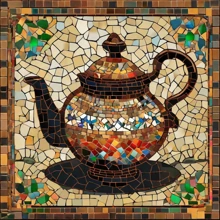
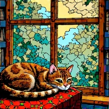
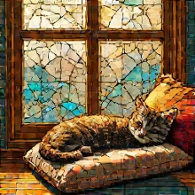
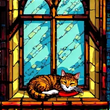
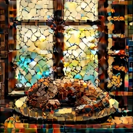
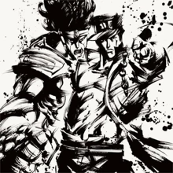
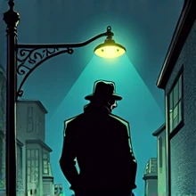
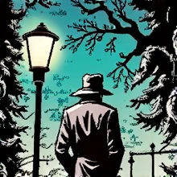
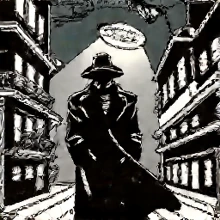
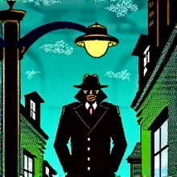
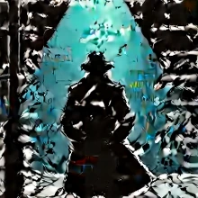
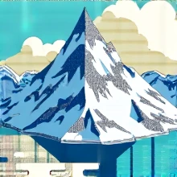
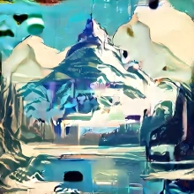
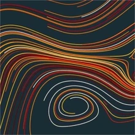
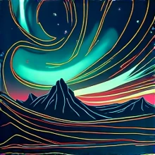
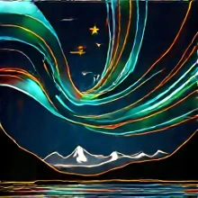
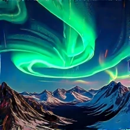
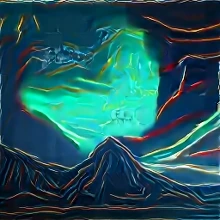
Results
An accurate lookahead allows FMRG to guide generation with few network function evaluations (NFEs), the number of model calls per sample. We evaluate compositional accuracy on GenEval, whose object detectors are independent of the reward used for guidance.
FMRG reaches a GenEval score of 0.77 with 20 NFEs. Flow map trajectory tilting, a multi-particle sampler that targets the reward tilt, requires 1,400 NFEs to reach the same score. This is a 70× reduction in network evaluations at matched accuracy.
On latent inverse problems, FMRG outperforms DPS, FlowDPS and FlowChef with up to 10× fewer NFEs, and aesthetic improvements are visible with as few as five.
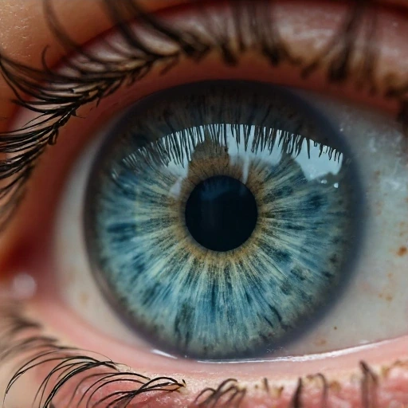
Fine-tuning by learning the control
Guidance computes a correction separately for every sample. Fine-tuning instead trains the model to approximate the optimal control, so that it generates higher-reward samples directly. The challenge is to evaluate and improve that control efficiently while the model changes.
Improving the control
FMRG looks ahead under the pretrained dynamics, assuming no further intervention. The value of a state under this assumption is simply its eventual reward, $V_t^0(x) = \lambda\, r(X_{t,1}(x))$. Its gradient is exactly the FMRG-J guidance signal.
For fine-tuning, we need to evaluate trajectories under the current control. Now the value includes both the reward at the endpoint and the control cost accumulated on the way there,
where $X^u$ is the flow map of the controlled dynamics. The value gradient tells us how changing the current state affects the remaining reward and control cost. At the optimum, the control equals this gradient, $u_t^* = \nabla_x V_t^*$.
WTF uses this relationship to improve the control through policy iteration. We freeze a reference control $\bar u$, compute its value gradient, and train an updated control to match that gradient. We then refresh the reference and repeat. In the idealized population setting, each update improves the objective, and the iteration can stop only at the optimal control.
This leaves a computational question. How do we evaluate the value gradient as the control changes?
Estimating value with two transitions
Computing the value appears to require following the entire future trajectory, since the reward is evaluated at the endpoint while the control cost accumulates along the way. A flow map gives access to both without stepping through every intermediate state. Starting from $x_t$, sample a time $\tau$ uniformly between $t$ and $1$ and take two transitions of the reference flow map,
The first transition gives an intermediate state $x_\tau$, where we evaluate the control cost. The second reaches $x_1$, where we evaluate the reward. Because $\tau$ is sampled uniformly over the remaining interval, multiplying the sampled cost by $1 - t$ estimates the accumulated control cost.
With an exact reference flow map, this gives an unbiased estimate of the value. The only randomness comes from sampling the intermediate time $\tau$, so we do not need to average over stochastic continuations of the state. A learned flow map introduces approximation error.
Differentiating this estimate with respect to $x_t$ gives the target for improving the control. The flow map therefore supplies both the future states and the derivatives needed for the update, without a learned critic or a full rollout.
Actor-critic
critic evaluations 0A learned critic predicts the value in one evaluation. Differentiating the critic gives an approximate value gradient.
Multi-step rollout
drift evaluations 0A numerical solver generates the trajectory in $T$ steps. Backpropagation differentiates through those steps to compute the value gradient.
WTF
flow-map transitions 0Two flow-map transitions produce $x_\tau$ and $x_1$ from $x_t$. Differentiating the resulting value estimate gives the value-gradient target.
Keeping the flow map consistent
As the control improves, its trajectories change. A flow map of the old dynamics would then predict the wrong future states and give inaccurate targets for the next update. The flow map must therefore be updated alongside the control.
Wasserstein-Tilted Flow Maps (WTF) couples these two updates. It fits the control to the estimated value gradient and continually self-distills the flow map to follow the updated dynamics. This keeps the map available for evaluating and improving the control throughout training. Self-distillation is therefore part of the alignment procedure itself.
Training the control and flow map together also avoids a failure of directly optimizing the endpoint map. Backpropagating the terminal reward through that map can improve its outputs without teaching the velocity field the corresponding dynamics.
In the idealized setting, every fixed point of the WTF loss gives the optimal control together with its flow map. The resulting model supports generation from one step to many. We call this simulation-free reinforcement learning because the learned flow map supplies the future states needed for training without simulating the intervening trajectory.
Results
The large-scale image experiments use a practical approximation that retains the flow map's endpoint prediction but omits its Jacobian in the reward-gradient term.
On text-to-image generation, WTF reaches the peak rewards of Flow-GRPO and Adjoint Matching with 280× and 47× less fine-tuning compute, respectively. Both baselines use KL-regularized formulations that rely on stochastic sampling.
WTF also reaches a higher reward with comparable diversity. In the table, HPSv2 is the training reward, PickScore and ImageReward are additional reward evaluations, and DreamSim and CLIP measure diversity as the spread among samples, with higher values meaning more spread.
| Text-to-image | NFE | HPSv2 | PickScore | ImageReward | DreamSim diversity | CLIP diversity |
|---|---|---|---|---|---|---|
| Base model | 50 | 0.274 | 21.58 | 0.997 | 0.281 | 0.239 |
| Adjoint Matching | 50 | 0.357 | 22.75 | 1.380 | 0.210 | 0.188 |
| Flow-GRPO | 50 | 0.303 | 22.06 | 1.210 | 0.250 | 0.215 |
| WTF | 4 | 0.401 | 22.97 | 1.383 | 0.250 | 0.220 |
| WTF | 50 | 0.398 | 22.87 | 1.416 | 0.217 | 0.205 |
The same fine-tuned checkpoint keeps its quality at few-step budgets without a separate distillation stage.
Text-to-image
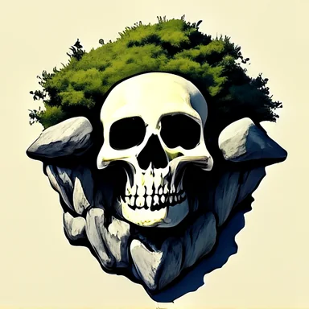
ImageNet-256
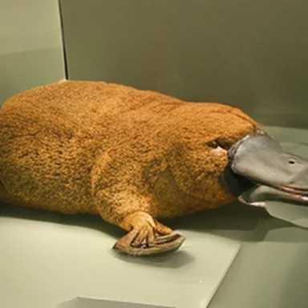
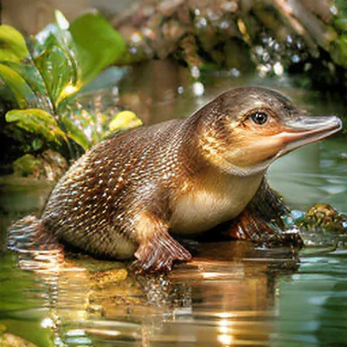
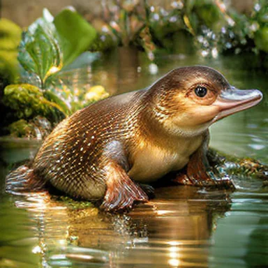
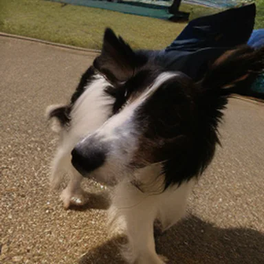
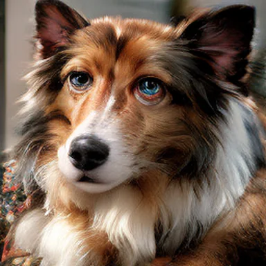
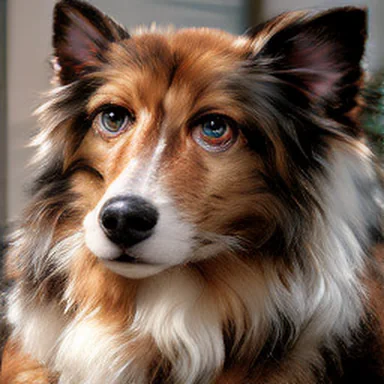
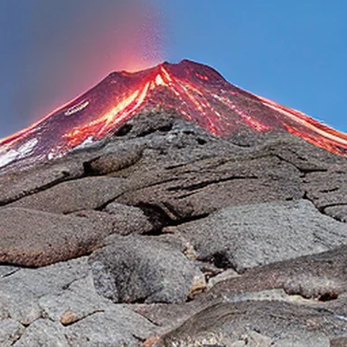
Looking Forward
These two papers suggest that the objective for reward alignment deserves to be reconsidered alongside the models we want to align. Measuring departure through the pretrained dynamics leads to a deterministic control problem that supports both guidance and fine-tuning. The choice of regularizer changes both the distribution we seek and the computations needed to reach it.
From this perspective, flow maps emerge as a foundational primitive for efficient reward alignment. Their ability to predict future states makes it possible to evaluate and improve a generative trajectory without simulating every intermediate step. FMRG uses this capability for guidance at test time, while WTF uses it to learn an improved generator. Continual self-distillation preserves this capability as the model changes, so the fine-tuned model remains a flow map that supports both few-step generation and further alignment.
We believe this role extends beyond the methods developed here. As reward feedback becomes a larger part of training generative models, efficiently evaluating the consequences of the model's own decisions becomes increasingly important. Flow maps provide precisely this capability. Together, these results highlight a dual role for flow maps as primitives for fast generation and efficient control. We hope they encourage further exploration of flow maps and the alignment objectives that make use of their structure.
Papers and code
- How to Guide Your Flow: Few-Step Alignment via Flow Map Reward Guidance. Jerry Y. Huang*, Justin Lin*, Sheel Shah, Kartik Nair, Nicholas M. Boffi. ICML 2026. arXiv · Project page · Code
- WTF?! Simulation-Free Reinforcement Learning with Wasserstein-Tilted Flow Maps. Abbas Mammadov†*, Jerry Y. Huang†*, Justin Lin*, Partha Kaushik, Sheel Shah, Kartik Nair, Yee Whye Teh, Nicholas M. Boffi. NeurIPS 2026 Spotlight. arXiv · Project page · Code
†Project lead · *Equal contribution